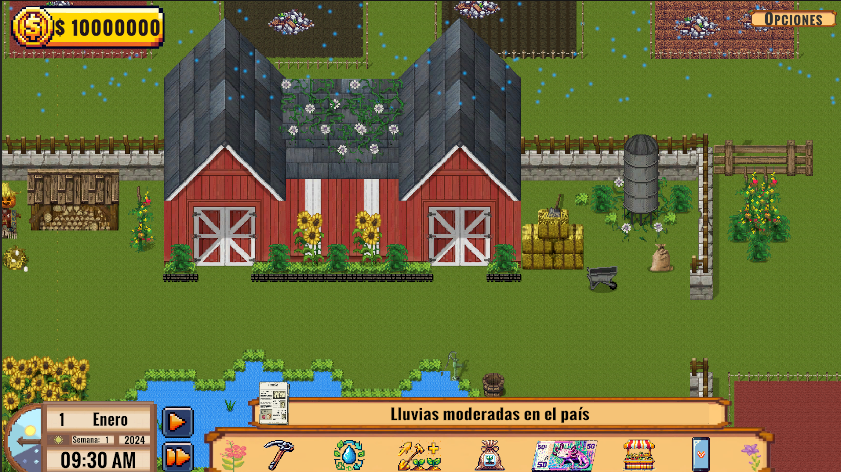
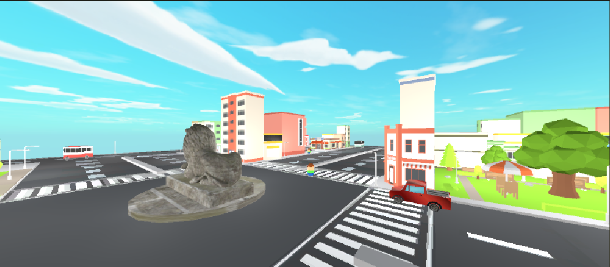
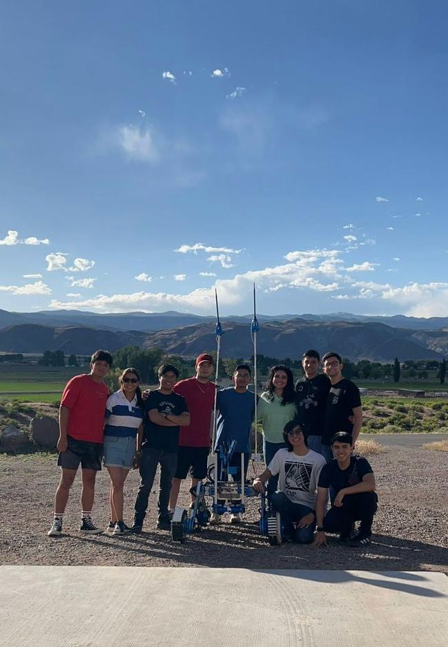
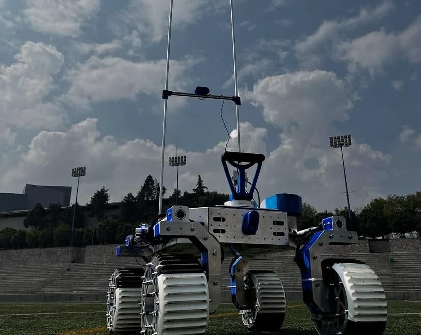
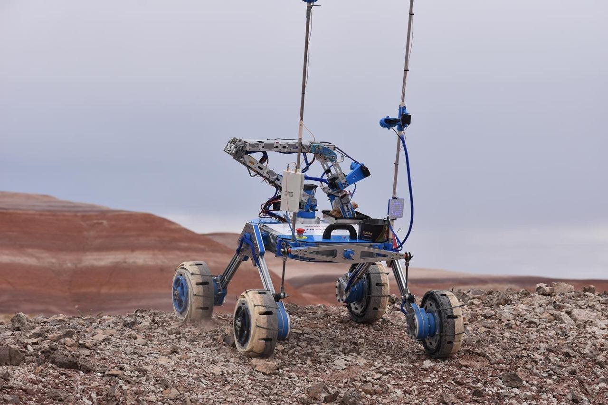
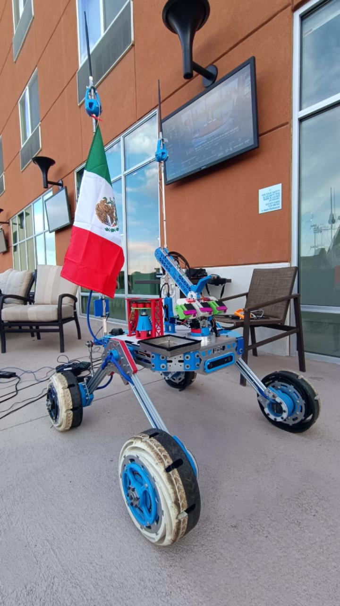
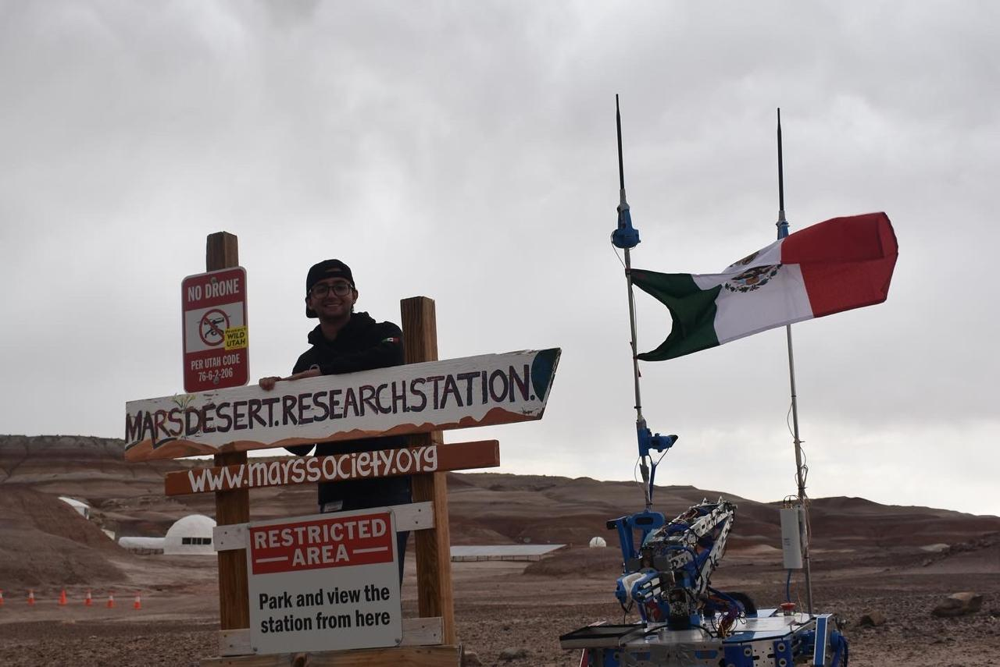

Verqor's Farming Tycoon
Sistema de un videojuego educativo del tema financiero para personas
involucradas en el campo. Fue desarrollado en Unity y corría en una
página web. Se utilizaron HTML, JS y CSS para la página web, C# para
el videojuego.
Repositorio
Video demostrativo

Sistema Multiagentes
Sistema en el que con Mesa (Python) se hicieron los distintos
agentes que conforman una ciudad. En Unity se realizó la
representación gráfica de dicha ciudad, haciendo los calculos para
el movimiento correcto de los agentes.
Repositorio
Video demostrativo
Zazil App
Sistema de aplicación móvil para la venta del productos Zazil de la
fundación Todas Brillamos Se utilizó Android Studio para la
aplicación y se utilizó Oracle Ápex y PayPal.
Repositorio

Liderazgo General - Quantum Robotics
Quantum Robotics es un equipo multidisciplinario de más de 80
integrantes. Lidero la planificación y gestión del desarrollo del
Robot de Exploración Espacial para la University Rover Challenge,
enfocándome en programación con Ubuntu y ROS. Durante mi
participación, hemos sido finalistas en dos ocasiones y alcanzado el
top 10 mundial, destacando por liderazgo, compromiso y resolución de
problemas.
Instagram

Rover Lucky 9 - Quantum Robotics
Robot de exploración espacial que se ha desarrollado para la
competencia University Rover Challenge. Este robot es capaz de
realizar distintas tareas como la recolección de muestras, el
reconocimiento de objetos y la manipulación de objetos.
Video Demostrativo SAR

Bus_Can_Drive 2 - Quantum Robotics
Paquete de ROS 2 en C++ que se encarga de los controlar los motores
del Rover Lucky 9. Este se ha ido adaptando para cumplir con las
constantes nuevas necesidaded del robot para mejorar su
funcionamiento.
Repositorio

Simple Drive 2 - Quantum Robotics
Paquete de ROS2 en Python que se encarga de subcribirse a un control
de consola y publicar velocidades para el movimiento del Rover Lucky
9.
Repositorio

Web Inteface - Quantum Robotics
Interfaz hecha para la manipulación de algunos sistemas del Rover
Lucky 9. Dentro de los sistemas controlados esta, el Brazo Robotico
y se realizan los calculos necesarios para moverlo adecuadamente a
su posición deseada. Se utilizó HTML, CSS y JS para la interfaz y
Python para la parte de backend.
{kind=link}
{kind=link}
{kind=link}
{kind=link}
{kind=link}
{kind=link}
{kind=link}
{kind=link}